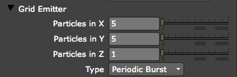
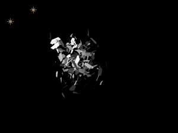
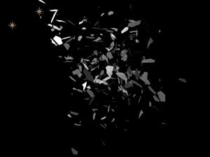
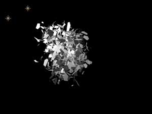
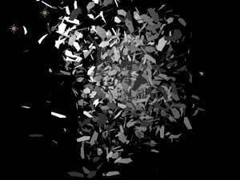
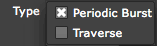

Emitter tab> Grid Emitter group
This group lets you emit particles on a 2D or 3D grid. The Emitter Types of Grid or Layer Grid need to be selected for this group to be active. When Layer Grid is selected, the Layer Emitter group also becomes active.

The Grid Emitter group.
Particles in X, Y, Z
These three controls set how many particles are emitted along the X-axis, Y-axis and Z-axis of the grid. Higher values make more particles.
Technical Note: Sometimes Particles in X, Y, X may not seem to have an effect on the grid of particles. To see the Grid more clearly, you may need to increase the Emitter Size values in X, Y, and Z to spread out the grid. Also, if the initial Velocity is high, the movement of the particles will mask the grid formation as the particles move from their initial grid formation. The Emitter Size and Velocity parameters are in the main Emitter tab.
 
Particles in X set low.
 
Particles in X set high.
Type pop-up
Type controls the style of particle emission along the grid.

There are two Type options:
• Periodic Burst: An entire grid of particles is emitted at once.
• Traverse: One particle at a time is emitted while the grid is traversed in order.